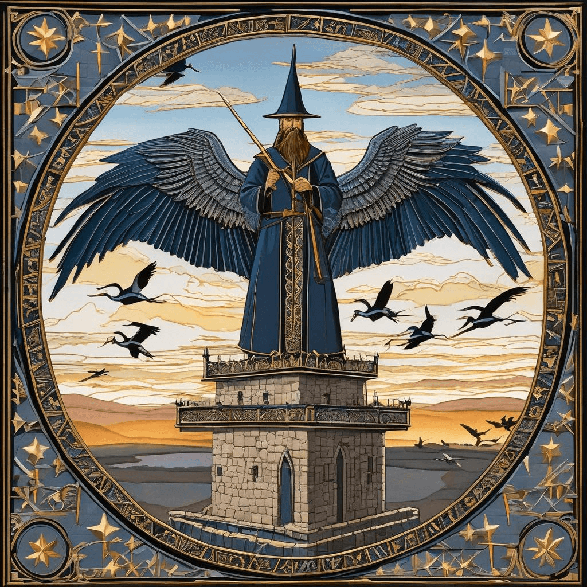
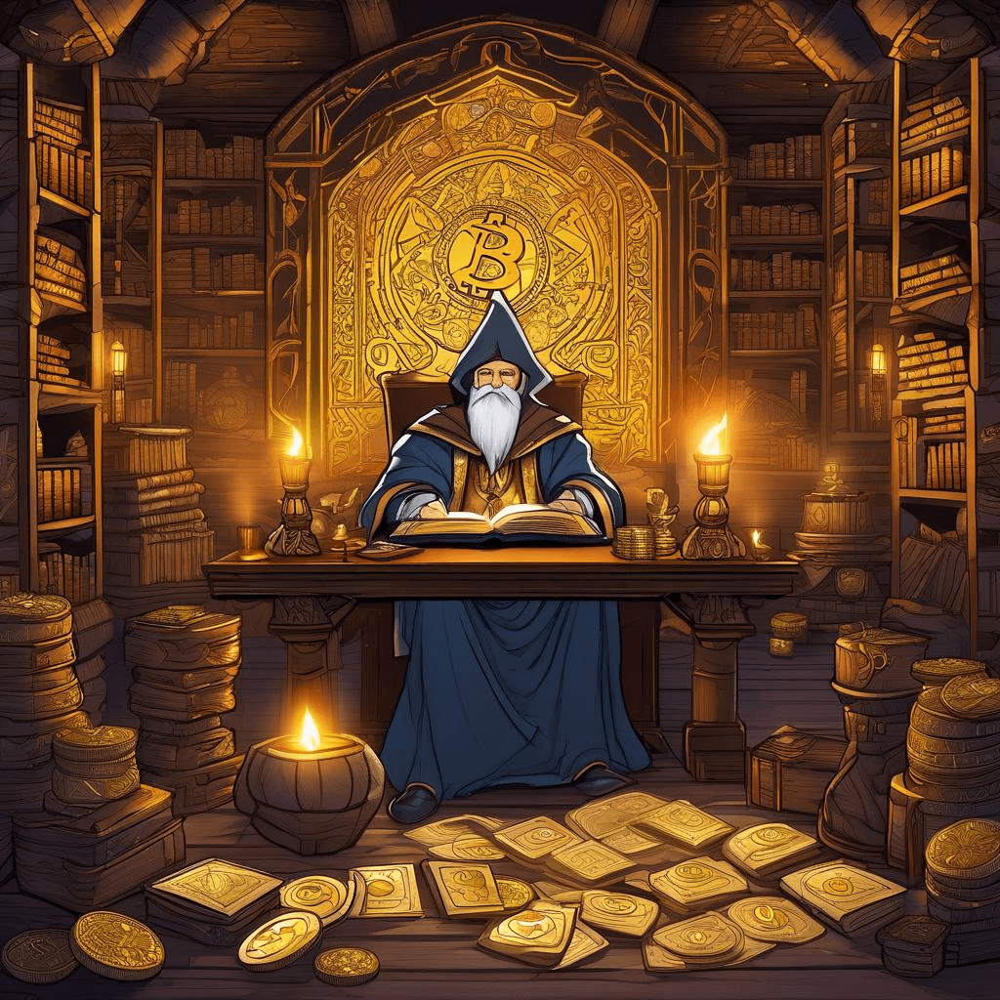
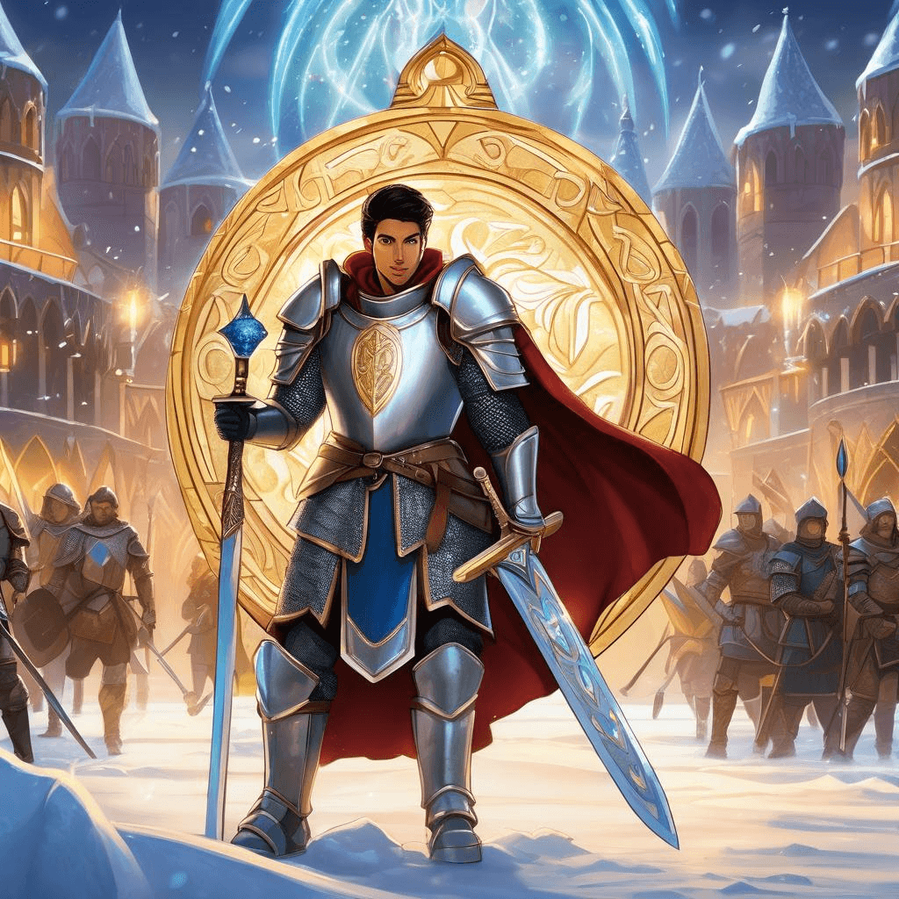

Chronicle Entry
February 1, 2026
The First Day of February brings portentous omens from the natural world, dear subjects! Word arrives from our neighboring territories along the Platte River that half a million Sandhill Crane warriors have gathered in their annual migration ritual. These noble aerial scouts, masters of vast distances, stage their spectacular journey northward whilst our Kingdom of Dakota prepares for the spring waterfowl season. Truly, when Nature herself provides such abundance, it reminds us why we treasure conservation through wise hunting rather than bureaucratic meddling from distant capitals!
Grand Magus Alistair hath been conducting ancient experiments with mystical gaming scrolls this very day. The sages of Adventure Game Studio have revealed their open source grimoire for crafting interactive tales, whilst other chroniclers remind us that in the Year of Our Lord nineteen seventy-six, the Apple Wizards declared their philosophy of providing enchantments freely with their scrying devices. Such generosity of spirit, when voluntary rather than mandated by royal decree! The magical Bitcoin tokens continue their dance at seventy-seven thousand, eight hundred and ninety-five pieces of gold, proving once again that decentralized wealth beyond the grasping fingers of central banking sorcerers remains a beacon of freedom.

✨ Crane Warrior Migration
Most impressive chronicles arrive from the realm of athletic combat! Young Carlos Alcaraz hath vanquished the legendary Djokovic to become the youngest warrior to claim all four Grand Slam tournaments, a feat rivaling the greatest hunting trophies of our age. Our own Cooper West's influence spreads from his homeland of Philip across the territories, whilst champion Erin Jackson declares her noble quest that she should not remain the sole Black woman to claim Winter Olympic gold in individual competition. Such ambition mirrors the pioneering spirit that built these Great Plains through individual excellence rather than collective mediocrity!

✨ Wizard Bitcoin Gaming Chamber
Thus Grand Magus Alistair reminds all: whether training great birds for migration, competing in athletic tournaments, or preserving ancient freedoms through decentralized magical tokens, February begins with promise when we trust in tradition, individual achievement, and the wisdom of letting skilled practitioners pursue excellence unfettered!

✨ Athletic Champions Tournament